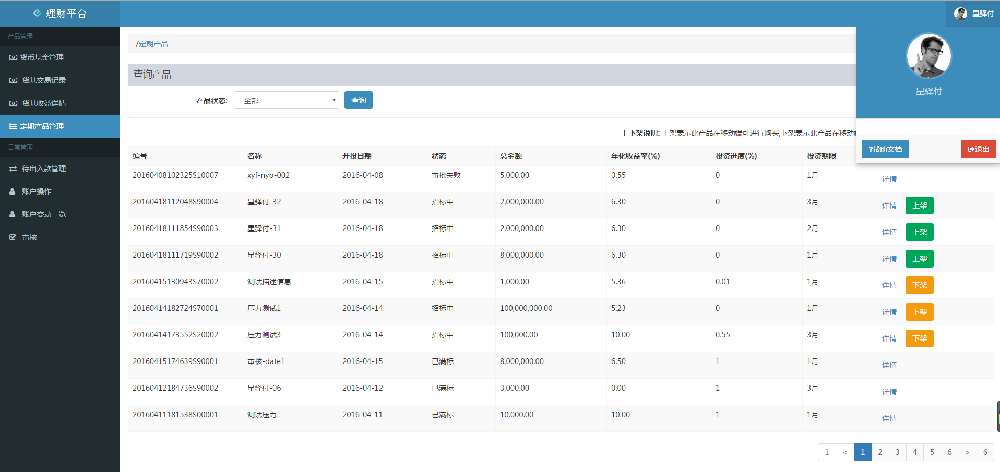
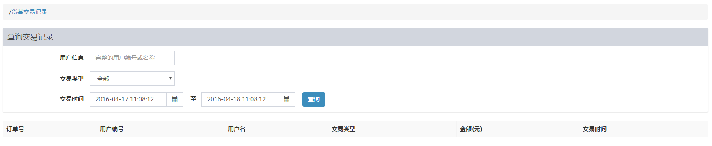
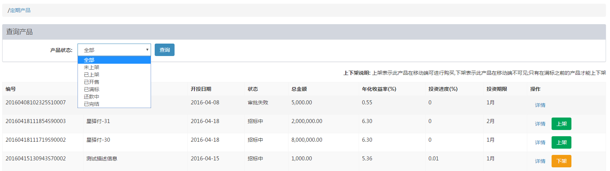
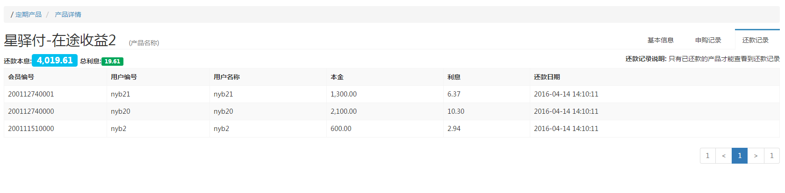
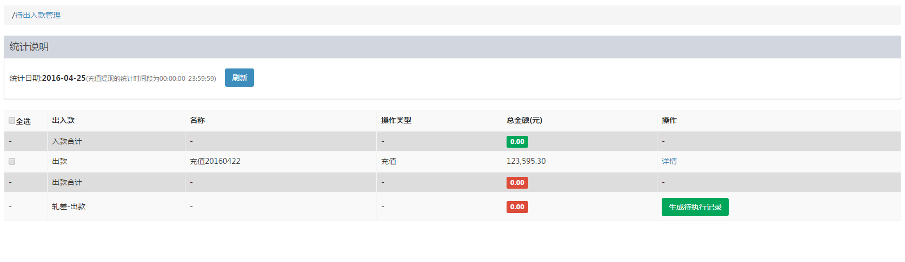
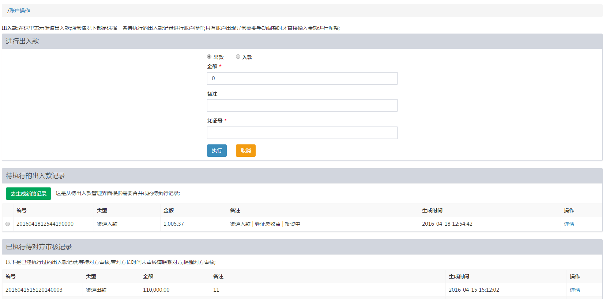
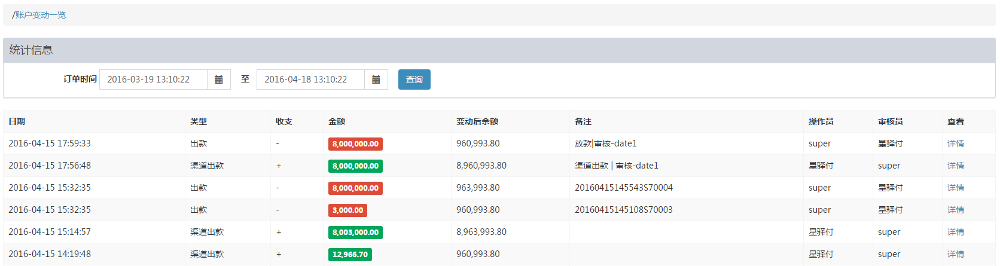

说明:
配置货币基金相关信息；

说明:
配置货币基金相关信息；

说明：
根据查询条件查询响应的申购赎回记录；默认查询最近一天的所有用户的交易记录；

说明:
根据不同条件， 查看货币基金的收益信息；

说明：
对固定期限的理财产品进行上下架管理，及详情、投资、还款等信息查看
产品相关的基本信息

查看投资人的投资记录

已完结的产品，可以看到对应的还款信息；

运营人员需要经常操作的功能；

说明:
出入款就是需要A方、B方、产品方之间进行资金流动的操作；当产品放款、基金申购时需要A方进行出款操作，当产品到期还款、基金赎回时需要A方进行入款操作；这里只是记录资金信息流，不会对实际银行账户进行转账操作；
目前B方只有一种出款类型就是账户充值;
可以对多个记录进行合并后进行出入款操作；勾选响应的出入款记录后，【生成待执行记录】

说明：
先执行实际银行账户之间转账，根据交易凭证号在这里发起出入款申请，等待对方审核; 大多数情况下是先在 待出入款管理生成待出入款记录，然后在这里选择一条记录进行执行，只有账户出现异常时才会不关联具体产品进行出入款操作;
这里的出款、入款是相对于B方银行账户来说的，即渠道出入款；出款即B方向A方账户转账，入款即从A方账户中转账到B方账户；

说明：
这里看到的账户是A方账户变动一览；账户操作中的出入款到这里就是渠道出入款了；这里的出款是A方账户转账到借款人账户，入款是借款人还款；

说明：
审核主要依据交易凭证号查看账户交易信息，如果正确无误就通过，否则就驳回，并联系对方，查看是否出现什么操作失误!
基金在货币基金管理中管理是否开放购买，这里的开发购买操作是让用户能否看到此基金产品；
定期产品在定期产品管理中进行上下架，未上架的产品用户看不到，即无法投资；
本系统中的出入款操作只是信息流，用以记录、对账等; 不会进行实际银行账户的操作，运营人员需要对银行账户进行实际操作之后拿着交易凭证号在本系统中发起出入款申请;
运营人员需要每天查看本系统中的待出入款管理是否有需要出入款的条目; 产品满标后放款及基金申购要做出款操作，产品还款及基金赎回要做入款操作，可以多个条目合并生成一个待执行记录，将合并后的轧差额进行账户操作;
在账户操作中选择一条待执行记录进行出入款操作；如果没有待执行记录通常是不需要进行账户操作的，只有账户出现异常时需要；
进行账户操作后，就等待对方审核,对方审核通过后出入款操作就完成了；
基金的申购需要在1点之前进行操作，因为A方要审核后去基金公司申购
主要根据交易凭证号去查看实际银行账户中是否存在此交易,金额是否正确，此金额对应的出入款条目是否正确; 如果正确就审批通过,如果不正确就驳回，联系对方运营人员，让其核对后重新发起操作；